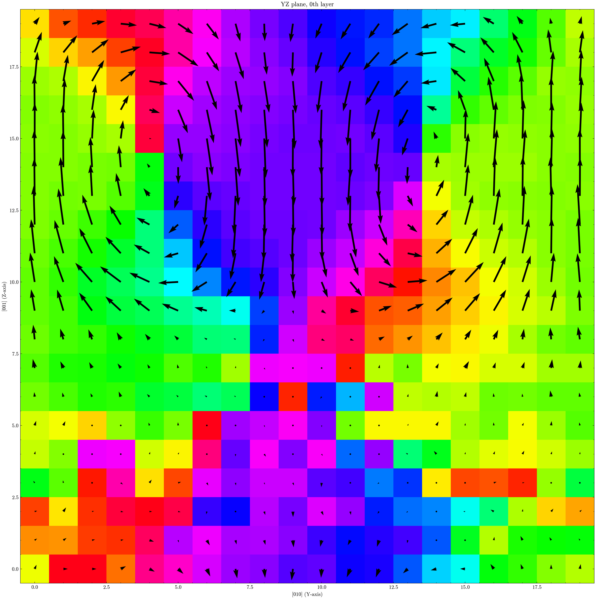
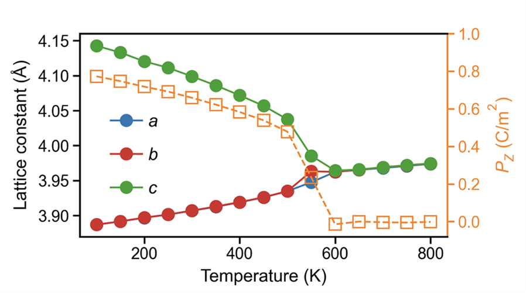
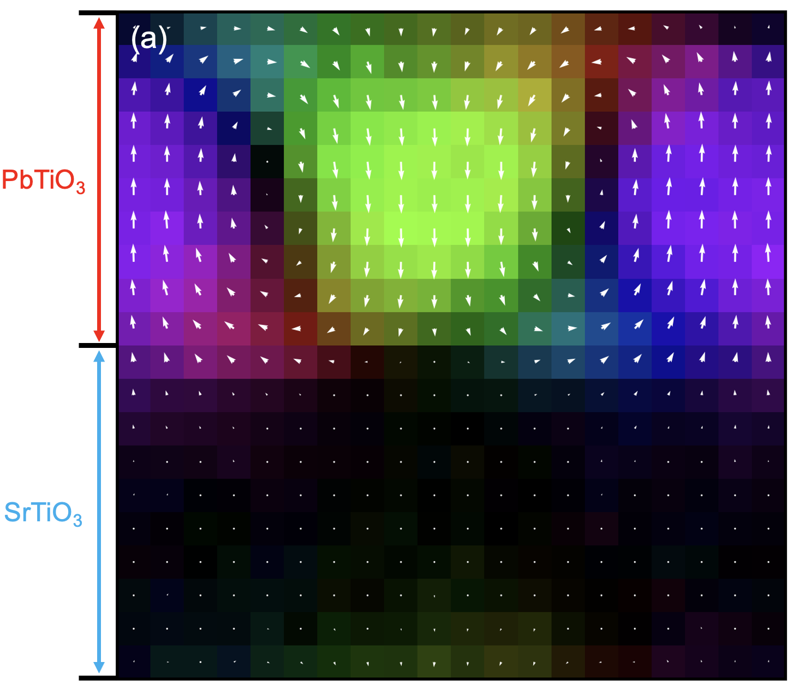

脚本位置： Scripts/calculators/ 和 Scripts/plt_scripts/
本教程包含通用工具和体系相关工具：
nlist、disp和avg-struct可广泛用于结构和轨迹分析。oct-tilt用于八面体环境分析，需要每个中心原子周围有 6 个近邻。pol-abo3专用于ABO3体系的极化分析。
概览
| 步骤 | CLI 命令 | 主要输入 | 输出 |
|---|---|---|---|
| 构建近邻列表 | gpumdkit.sh -calc nlist ... |
model.xyz |
nl-*.dat |
| 计算位移 | gpumdkit.sh -calc disp ... |
轨迹 + nl-*.dat |
displacements.dat |
| 平均轨迹结构 | gpumdkit.sh -calc avg-struct ... |
轨迹 | 平均结构 extxyz |
| 八面体倾转 | gpumdkit.sh -calc oct-tilt ... |
轨迹 + B-O 近邻列表 | 倾转角数据表 |
| ABO3 极化 | gpumdkit.sh -calc pol-abo3 ... |
轨迹 + 近邻列表 | 极化数据表 |
| plane-grid 绘图 | gpumdkit.sh -plt plane-grid ... |
结构 + 位移数据 | 平面剖面图 |
依赖
构建近邻列表、计算位移、计算八面体倾转、计算 ABO3 极化以及绘制
plane-grid 平面剖面的命令需要 ferrodispcalc：
pip3 install git+https://github.com/MoseyQAQ/ferrodispcalc.gitavg-struct 不依赖 ferrodispcalc，只使用 GPUMDkit 的标准 ASE 和
NumPy 依赖。
交互模式入口
交互模式下，它们是计算器菜单中的 406–410（gpumdkit.sh → 4) Calculators）。每一项也都有下文所用的命令行形式，完整参数可以这样查看：
gpumdkit.sh -calc nlist -h
gpumdkit.sh -calc disp -h
gpumdkit.sh -calc avg-struct -h
gpumdkit.sh -calc oct-tilt -h
gpumdkit.sh -calc pol-abo3 -h
gpumdkit.sh -plt plane-grid -h406) 构建近邻列表 (calc_neighbor_list.py)
为指定中心元素和近邻元素构建近邻列表。
使用场景：
这通常是运行 disp、oct-tilt 和 pol-abo3 之前的第一步，因为这些脚本会读取 nl-*.dat 近邻文件。
用法
# 示例 1：为八面体分析构建 Ti-O 最近 6 个近邻
gpumdkit.sh -calc nlist -i model.xyz -c 4.0 -n 6 -C Ti -E O -o nl-Ti-O.dat
# 示例 2：为 A 位中心分析构建 Pb/Sr-O 最近 12 个近邻
gpumdkit.sh -calc nlist -i model.xyz -c 4.0 -n 12 -C Pb Sr -E O参数（完整）
-i, --input： 输入结构文件。默认值：model.xyz。-x, --index： 从输入文件中读取的帧编号。默认值：0。-c, --cutoff（必需）： 近邻搜索截断距离，单位为 Angstrom。-n, --neighbor-num（必需）： 每个中心原子的近邻数量。-d, --defect： 缺陷模式。启用后，如果近邻数量不足，缺失位置会用中心原子编号填充。-C, --center-elements（必需）： 中心元素列表。-E, --neighbor-elements（必需）： 近邻元素列表。-o, --output： 输出文件路径。默认值：nl-<center>-<neighbor>.dat；多个元素用_连接，例如nl-Pb_Sr-O.dat。
输出文件
- 主要输出：近邻列表文本文件，例如
nl-Ti-O.dat。 - 文件是一个二维整数数组，形状为
(n_center, neighbor_num + 1)。每一行对应一个中心原子：第一列是中心原子编号，后续列是近邻原子编号，所有编号均为 1-based。
407) 从轨迹计算位移 (calc_displacement.py)
根据轨迹或模型结构以及近邻列表，计算局域位移矢量。
用法
# 示例 1：从 model.xyz 计算单帧位移
gpumdkit.sh -calc disp -i model.xyz -n nl-Ti-O.dat -o disp_model.dat
# 示例 2：使用 movie.xyz 的最后 20% 帧
gpumdkit.sh -calc disp -i movie.xyz -n nl-Ti-O.dat -l 0.2 -o displacements.dat参数（完整）
-i, --input： 输入 xyz 文件。默认值：model.xyz。-n, --neighbor-list（必需）： 由nlist生成的近邻列表文件。-o, --output： 输出文件。默认值：displacements.dat。-s, --start： 切片起始帧。默认值：0。-t, --stop： 切片终止帧。默认值：到末尾。-p, --step： 切片步长。默认值：1。-l, --last： 选择末尾部分帧。 整数表示最后N帧；0 < value < 1表示最后一部分比例的帧。-l/--last与-s/-t/-p互斥。
输出文件
- 主要输出：
displacements.dat，或你指定的输出文件名。 - 保存的文本文件是二维数组：对于单帧输入，形状为
(n_center, 3)；对于多帧输入，形状为(n_selected_frame * n_center, 3)，按帧优先顺序排列。三列分别为dx、dy和dz位移分量，单位为 Angstrom。
408) 计算平均结构 (calc_averaged_structure.py)
从选定轨迹帧生成一个平均结构。 通常可在体系平衡后使用：对于接近平衡的固体，可以对目标温度下的一段轨迹取平均，并分析该代表性结构，而不是逐帧处理每个 snapshot。
用法
# 示例 1：平均所有帧
gpumdkit.sh -calc avg-struct -i movie.xyz -o averaged_structure.xyz
# 示例 2：平均选定帧范围 (100:500:2)
gpumdkit.sh -calc avg-struct -i movie.xyz -s 100 -t 500 -p 2 -o avg_slice.xyz参数（完整）
-i, --input： 输入轨迹文件。默认值：movie.xyz。-o, --output： 输出结构文件。默认值：averaged_structure.xyz。-s, --start： 切片起始帧。默认值：0。-t, --stop： 切片终止帧。默认值：到末尾。-p, --step： 切片步长。默认值：1。-l, --last： 选择末尾帧，可以是最后N帧或最后一部分比例的帧。-l/--last与-s/-t/-p互斥。
输出文件
- 主要输出：单帧平均结构 extxyz 文件。
- 位置平均会相对于所选第一帧进行 MIC/PBC 修正。
409) 计算八面体倾转 (calc_oct_tilt.py)
根据 B-O 近邻列表计算八面体倾转角。
该功能常用于分析 ABO3 体系中的八面体转动模式，例如 SrTiO3 和 PbZrO3。
用法
# 示例 1：从单帧结构计算 TiO6 八面体倾转
gpumdkit.sh -calc oct-tilt -i model.xyz -n nl-Ti-O.dat -o oct_tilt_model.dat
# 示例 2：从轨迹最后 20% 帧计算 TiO6 八面体倾转
gpumdkit.sh -calc oct-tilt -i movie.xyz -n nl-Ti-O.dat -l 0.2 -o octahedral_tilt.dat参数（完整）
-i, --input： 输入 xyz 文件。默认值：model.xyz。-n, --neighbor-list（必需）： B-O 近邻列表文件。-o, --output： 输出文件。默认值：octahedral_tilt.dat。-s, --start： 切片起始帧。默认值：0。-t, --stop： 切片终止帧。默认值：到末尾。-p, --step： 切片步长。默认值：1。-l, --last： 选择末尾帧，可以是最后N帧或最后一部分比例的帧。-l/--last与-s/-t/-p互斥。
输出文件
- 主要输出：
octahedral_tilt.dat，或自定义输出文件名。 - 保存的文本文件是三列二维数组，分别为
theta_x、theta_y、theta_z，单位为 degree。对于单帧输入，形状为(n_center, 3)；对于多帧输入，形状为(n_selected_frame * n_center, 3)。
410) 计算 ABO3 体系极化 (calc_polarization_abo3.py)
计算 ABO3 体系的局域极化矢量。
用法
# 示例 1：单帧 ABO3 极化
gpumdkit.sh -calc pol-abo3 -i model.xyz --nl-ba nl-Ti-Pb.dat --nl-bo nl-Ti-O.dat \
--bec Pb=2 Sr=2 Ti=4.0 O=-2.0 -o polarization_model.dat
# 示例 2：选定轨迹帧范围上的极化
gpumdkit.sh -calc pol-abo3 -i movie.xyz --nl-ba nl-Ti-Pb.dat --nl-bo nl-Ti-O.dat \
--bec Pb=2 Ti=4.0 O=-2.0 -s 200 -t 600 -p 5 -o polarization_slice.dat参数（完整）
-i, --input： 输入 xyz 文件。默认值：model.xyz。--nl-ba（必需）： B-A 近邻列表。--nl-bo（必需）： B-O 近邻列表。-o, --output： 输出文件。默认值：polarization.dat。--bec（必需）： Born 有效电荷项，格式为Element=value。 示例：Pb=2.0 Ti=4.0 O=-2.0。按化学式计算的电荷总和应为零，否则脚本会给出警告。-s, --start： 切片起始帧。默认值：0。-t, --stop： 切片终止帧。默认值：到末尾。-p, --step： 切片步长。默认值：1。-l, --last： 选择末尾帧，可以是最后N帧或最后一部分比例的帧。-l/--last与-s/-t/-p互斥。
重要检查：
--bec必须包含输入结构中的所有元素种类。--nl-ba和--nl-bo中的中心原子编号必须匹配。
输出文件
- 主要输出：
polarization.dat，或自定义输出文件名。 - 保存的文本文件是三列二维数组，分别为
Px、Py、Pz，单位为C/m^2。对于单帧输入，形状为(n_center, 3)；对于多帧输入，形状为(n_selected_frame * n_center, 3)，按帧优先顺序排列。如果总 Born 电荷不平衡，脚本会打印 warning。
Plane-grid 可视化 (plt_plane_grid.py)
你可以可视化 displacements.dat 或 polarization.dat：
# 示例 1：Ti 位点上的位移图，选择第一个 XY 层
gpumdkit.sh -plt plane-grid -i model.xyz -d displacements.dat -e Ti --select-xy 0
# 示例 2：Pb 位点上的极化图，选择 XZ 和 YZ 层
gpumdkit.sh -plt plane-grid -i model.xyz -d polarization.dat -e Pb --select-xz 0 1 2 --select-yz 3 4参数（完整）：
-i, --input： 用于原子布局和分层的输入 xyz 文件。默认值：model.xyz。-d, --disp： 矢量场数据文件。默认值：displacements.dat。-e, --elements（必需）： 用于将矢量映射到晶格层上的中心元素符号。-m, --tol： 网格映射的层容差。默认值：1.0。-g, --target-size： 期望网格大小，格式为nx ny nz。-o, --save-dir： 图片输出目录。默认值：plot。-f, --frame： 当矢量数据包含多帧时，要可视化的帧编号。默认值：0。--select-xy： 选定的 XY 层编号。--select-xz： 选定的 XZ 层编号。--select-yz： 选定的 YZ 层编号。
输出：
- 如果需要，会创建输出目录。
- 图片保存为
XY_*.png、XZ_*.png、YZ_*.png。

输出文件一览
| 脚本 | 主要输出 | 保存内容 |
|---|---|---|
calc_neighbor_list.py |
nl-*.dat |
1-based 中心原子编号和近邻原子编号 |
calc_displacement.py |
*.dat |
局域位移矢量（dx dy dz，Angstrom） |
calc_averaged_structure.py |
*.xyz |
一个平均结构 |
calc_oct_tilt.py |
*.dat |
八面体倾转角（theta_x theta_y theta_z，degree） |
calc_polarization_abo3.py |
*.dat |
局域极化矢量（Px Py Pz，C/m^2） |
plt_plane_grid.py |
plot/*.png |
根据矢量场数据绘制的 XY/XZ/YZ 平面图 |
真实案例
PbTiO3 的温度驱动铁电-顺电相变
假设所有文件都位于当前目录 ./：
./
├── model.xyz
├── 300K.xyz
├── 350K.xyz
├── 400K.xyz
├── ...
└── 800K.xyzmodel.xyz 是用于进行 MD 模拟的初始结构。每个 <T>K.xyz 是温度 <T> 下的轨迹。
第 1 步：从每条轨迹的后半段得到平均结构
for f in *K.xyz; do
tag="${f%.xyz}"
gpumdkit.sh -calc avg-struct -i "$f" -l 0.5 -o "${tag}-avg.xyz"
done这会写出 300K-avg.xyz、350K-avg.xyz、...、800K-avg.xyz。
第 2 步：基于 model.xyz 构建近邻列表
# B-O 列表：为每个 Ti 找最近的 6 个 O 原子
gpumdkit.sh -calc nlist -i model.xyz -c 4.0 -n 6 -C Ti -E O -o nl-Ti-O.dat
# A-O 列表：为每个 Pb 找最近的 12 个 O 原子
gpumdkit.sh -calc nlist -i model.xyz -c 4.0 -n 12 -C Pb -E O -o nl-Pb-O.dat
# pol-abo3 需要的 B-A 列表：为每个 Ti 找最近的 8 个 Pb 原子
gpumdkit.sh -calc nlist -i model.xyz -c 5.0 -n 8 -C Ti -E Pb -o nl-Ti-Pb.dat第 3 步：为每个温度计算位移和极化
这里使用 Born 有效电荷（BEC），不是名义离子电荷。对于本例中的 PbTiO3：
PTO = {
'Pb': 3.44,
'Ti': 5.18,
'O': -(3.44 + 5.18) / 3
}BEC 可以取自你自己的 DFPT 计算或文献。然后计算局域位移和极化：
for f in *K.xyz; do
tag="${f%.xyz}"
gpumdkit.sh -calc disp -i "$f" -n nl-Ti-O.dat -l 0.5 -o "${tag}-disp.dat"
gpumdkit.sh -calc pol-abo3 -i "$f" --nl-ba nl-Ti-Pb.dat --nl-bo nl-Ti-O.dat \
--bec Pb=3.44 Ti=5.18 O=-2.8733333333 -l 0.5 -o "${tag}-pol.dat"
done第 4 步：绘制实空间位移和极化图
for f in *K.xyz; do
tag="${f%.xyz}"
gpumdkit.sh -plt plane-grid -i "${tag}-avg.xyz" -d "${tag}-disp.dat" -e Ti --select-xz 1 -o "plot-${tag}-disp"
gpumdkit.sh -plt plane-grid -i "${tag}-avg.xyz" -d "${tag}-pol.dat" -e Ti --select-xz 1 -o "plot-${tag}-pol"
done第 5 步：构建温度-序参量曲线
结合每个平均结构的晶格信息和对应的极化文件（<T>K-pol.dat），可以得到如下图：

该趋势显示在约 600 K 附近发生明显相变，此时极化消失。
PbTiO3/SrTiO3 超晶格中的拓扑结构
假设 movie.xyz 是当前目录下 PbTiO3/SrTiO3 超晶格的轨迹。
第 1 步：使用最后 25% 帧构建平均结构
gpumdkit.sh -calc avg-struct -i movie.xyz -l 0.25 -o model-avg.xyz第 2 步：构建 Ti 近邻列表
gpumdkit.sh -calc nlist -i model-avg.xyz -c 4.0 -n 6 -C Ti -E O -o nl-Ti-O.dat第 3 步：绘制 plane-grid 图
gpumdkit.sh -calc disp -i movie.xyz -n nl-Ti-O.dat -l 0.25 -o disp-last25.dat
gpumdkit.sh -plt plane-grid -i model-avg.xyz -d disp-last25.dat -e Ti --select-xy 0 -o plot-topology
这会得到与前面展示相似的图。在 PTO 区域可以看到类似涡旋的极化图样，而 STO 区域的极化接近于零。
注意：示例图使用了自定义 colormap。GPUMDkit 默认输出使用不同风格，可通过修改绘图脚本进行调整。
其他体系
有机-无机杂化铁电体
在许多有机-无机铁电体中，极化与各向异性的分子单元密切相关。跟踪分子取向的一种实用方法是使用键矢量。
对于 TMCM-CdCl3，可以使用 TMCM 分子中的 C-Cl 键方向作为取向代理，并据此估计极化态：
# 为每个 C 找最近的 Cl（必要时调整截断距离）
gpumdkit.sh -calc nlist -i model.xyz -c 3 -n 1 -C C -E Cl -o nl-C-Cl.dat
# 从轨迹计算 C-Cl 键向量
gpumdkit.sh -calc disp -i movie.xyz -n nl-C-Cl.dat -o ccl_vectors.dat随后可以把 ccl_vectors.dat 作为取向序参量进行分析。详见 Phys. Rev. Lett. 136, 016801。
其他铁电材料家族
除 ABO3 外，ferrodispcalc 也可以适配许多铁电体系，包括氮化物、氧化铪基化合物、有机-无机杂化体系以及部分二维铁电材料。